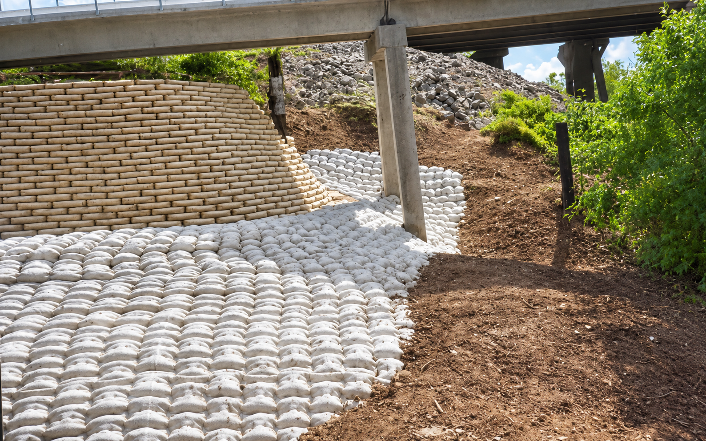
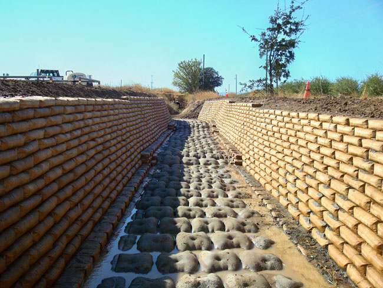

River Bends
Stabilizing migrating banks and protecting adjacent assets.

The world leader in
Er-Con Technologies solves complex erosion problems, stabilizes banks and protects critical assets with solutions designed around actual field conditions.
Proven experience. Global impact.
From creeks and rivers to lakes, ponds, stormwater systems and coastlines, Er-Con combines disciplined engineering, proprietary systems and decades of field experience to protect infrastructure, property and natural resources.
Our work spans exposed pipeline remediation, bank stabilization, channel restoration, bridge protection and other complex erosion-control challenges.
With over 3,000 completed projects around the world, Er-Con brings proven performance to demanding environments.
Stabilizing migrating banks and protecting adjacent assets.
Correcting exposure and restoring reliable support.

Protecting crossings, bridges and surrounding property.

From design through construction and final stabilization.

How we deliver
In-house teams connect technical decisions and field execution from site evaluation through installation.
Field investigation and site information that establish the foundation for sound solutions.
Practical engineering and construction documents built around the conditions in the field.
Support for environmental review, applications, agency coordination and compliance.
Define objectives, risks, alternatives, project boundaries and the path forward.
Coordinated field execution with attention to safety, quality and long-term performance.
Integrated systems designed to manage flow, stabilize banks and protect valuable assets.
Engineering + field execution
Er-Con connects technical decisions with what can actually be built in the field. The result is a clearer path from investigation and permitting to installation.
How we work
Er-Con brings dedicated teams, proven systems and project leadership to every site. Wherever practical, we leverage local experience through contractors, equipment providers and material suppliers, supporting the surrounding community while maintaining ownership of the work from start to finish.
Our crews respect the land, the customer and the community. They minimize the project footprint, restore the surrounding area and leave the site better than they found it. Customers regularly recognize Er-Con for the care our teams bring to the work.
Exposed pipeline issues? Erosion concerns?
Er-Con solutions are proven to protect critical assets in demanding environments.